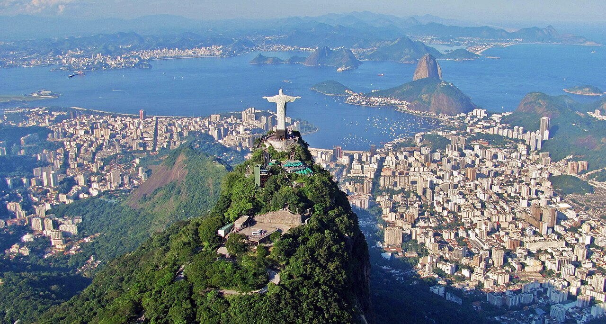

Historia
Rio de Janeiro, simplesmente referido como Rio, é a capital do estado brasileiro do Rio de Janeiro. Um dos maiores destinos turísticos internacionais no Brasil,[8] na América Latina e também do Hemisfério Sul, é uma das primeiras cidades do país. É a segunda maior metrópole do Brasil (depois de São Paulo), a sétima maior da América e a décima oitava do mundo. Sua população segundo o censo de 2022 do IBGE era 6 211 223 habitantes.[1] Tem o epíteto de Cidade Maravilhosa,[9] e os que nela nascem são chamados cariocas.

Classificada como uma metrópole, exerce influência nacional, seja do ponto de vista cultural, econômico ou político,[10] e é um dos principais centros econômicos, culturais e financeiros do país, sendo internacionalmente conhecida por diversos ícones culturais e paisagísticos, como o Pão de Açúcar, o morro do Corcovado com a estátua do Cristo Redentor, as praias dos bairros de Copacabana, Ipanema e Barra da Tijuca, entre outras; os estádios do Maracanã e Nilton Santos; o bairro boêmio da Lapa e seus arcos; o Theatro Municipal do Rio de Janeiro; as florestas da Tijuca e da Pedra Branca; a Quinta da Boa Vista; a Biblioteca Nacional; a ilha de Paquetá; o réveillon de Copacabana; o carnaval carioca; a Bossa Nova e o samba. Parte da cidade foi designada Patrimônio da Humanidade pela UNESCO em 1 de julho de 2012.[11][12]
Representa o segundo maior PIB do país,[13] estimado em cerca de 418,462 bilhões * de reais (IBGE/2023),[14] e é sede das duas maiores empresas brasileiras — a Petrobras e a Vale, e das principais companhias de petróleo e telefonia do Brasil, além do maior conglomerado de empresas de mídia e comunicações da América Latina, o Grupo Globo.[15] Contemplado por grande número de universidades e institutos, é o segundo maior polo de pesquisa e desenvolvimento do Brasil, responsável por 19% da produção científica nacional, segundo dados de 2005.[16] Rio de Janeiro é considerada pela Globalization and World Cities Research Network (GaWC) como uma cidade global beta-.[17]
A cidade foi, sucessivamente, capital da colônia portuguesa do Estado do Brasil (1763–1815), depois do Reino Unido de Portugal, Brasil e Algarves (1815–1822), do Império do Brasil (1822–1889) e da República dos Estados Unidos do Brasil (1889–1968) até 1960, quando a sede do governo foi transferida definitivamente para a recém-construída Brasília. Naquele ano, o Rio foi transformado em uma cidade-estado com o nome de Guanabara e, somente em 1975, torna-se a capital do estado do Rio de Janeiro.
Pontos Turísticos
- Cristo Redentor
- Pão de Açúcar
- Escadaria Selarón
- Maracanã
A construção do Cristo Redentor começou em 1922 e foi concluída em 1931, para comemorar o centenário da independência do Brasil. Com estilo Art Déco, a estrutura de concreto revestida de pedra-sabão oferece vistas panorâmicas da Baía de Guanabara, das praias de Copacabana e Ipanema e da Floresta da Tijuca. O acesso pode ser feito por trens, vans ou trilhas a partir do bairro de Cosme Velho.
Com 396 metros acima do nível do mar, o Pão de Açúcar é acessado pelo famoso Bondinho, inaugurado em 1912 — o primeiro teleférico do Brasil e o terceiro do mundo. Do alto, as vistas são espetaculares e o local já apareceu em diversos filmes e novelas.

Criada pelo artista chileno Jorge Selarón a partir de 1990, a escadaria é composta por mais de 2.000 azulejos coloridos de mais de 60 países. É um monumento à cultura brasileira e à gratidão do artista, localizado no bairro de Santa Teresa.
Inaugurado em 1950 para a Copa do Mundo da FIFA, o Maracanã é palco do histórico "Maracanazo" — a final de 1950 quando o Uruguai derrotou o Brasil. Com capacidade para mais de 78.000 espectadores, sediou a final da Copa de 2014 e as cerimônias das Olimpíadas de 2016.